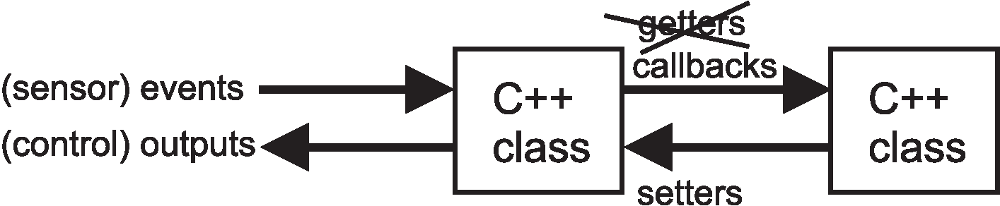

In realtime embedded coding it's all about events which can be a binary signal as somebody opening a door or an ADC signalling that a sample is ready. Fig. 1.1 shows the basic dataflow and how event timing is established: devices by themselves have event signals such as data ready or crash sensor triggered. The Linux kernel then receives interrupt callbacks. However, userspace has no direct interrupt mechanism but it has blocking I/O where an I/O operation blocks until an interrupt has happened. These can then be translated back into callbacks between classes. Data is transmitted back to the hardware via methods called “setters”.
|

|
When developing the C++ classes keep S.O.L.I.D. https://www.digitalocean.com/community/conceptual_articles/s-o-l-i-d-the-first-five-principles-of-object-oriented-designin mind:
Besides S.O.L.I.D it's also essential that:
Transfer to/from SPI is best managed by the low level access to /dev. Open the SPI device with the standard open() function:
int fd = open( "/dev/spidev0.0", O_RDWR);
Then set the SPI mode (see table. 2.1):
int ret = ioctl(fd, SPI_IOC_WR_MODE, &mode);which is explained, for example, here: https://www.analog.com/en/analog-dialogue/articles/introduction-to-spi-interface.html.
Since SPI transmits and receives at the same time we need to use ioctl to do the communication. Populate this struct:
struct spi_ioc_transfer tr = {
.tx_buf = (unsigned long)tx1,
.rx_buf = (unsigned long)rx1,
.len = ARRAY_SIZE(tx1),
.delay_usecs = delay,
.speed_hz = speed,
.bits_per_word = 8,
};
which points to two character buffers “tx” and “rx” with the
same length.
Reading and simultaneous writing is happening then via the ioctrl function:
int ret = ioctl(fd, SPI_IOC_MESSAGE(1), &tr);
Sometimes the SPI protocol of a chip is so odd that even the raw I/O via /dev won't work and you need to write your own bit banging interface, for example done here for the ADC on the alphabot: https://github.com/berndporr/alphabot/blob/main/alphabot.cpp#L58. This is obviously far from ideal as it might require “usleep” commands so that acquisition needs to be run in a separate thread (the alphabot uses a timer callback in a separate thread).
Overall the SPI protocol is often device dependent and calls for experimentation to get it to work. Often the SPI clock is also the ADC conversion clock which requires a longer lasting clock signal by transmitting dummy bytes in addition to the payload.
As a general recommendation do not use SAR converters which use the SPI data clock also as acquisition clock as they are often not compatible with the standard SPI transfers via /dev. Use sensors or ADCs which have their own clock signal.
root@raspberrypi:/home/pi# i2cdetect -y 1
0 1 2 3 4 5 6 7 8 9 a b c d e f
00: -- -- -- -- -- -- -- --
10: -- -- -- -- -- -- -- -- -- -- -- -- -- -- 1e --
20: -- -- -- -- -- -- -- -- -- -- -- -- -- -- -- --
30: -- -- -- -- -- -- -- -- -- -- -- -- -- -- -- --
40: -- -- -- -- -- -- -- -- -- -- -- -- -- -- -- --
50: -- -- -- -- -- -- -- -- 58 -- -- -- -- -- -- --
60: -- -- -- -- -- -- -- -- -- -- -- 6b -- -- -- --
70: -- -- -- -- -- -- -- --
root@raspberrypi:/home/pi#
In this case there are 3 I2C devices on the I2C bus at addresses
1E, 58 and 6B and need to be specified when
accessing the I2C device.
char buf[2];
int file = open("/dev/i2c-2",O_RDWR);
int addr = 0x58;
ioctl(file, I2C_SLAVE, addr);
write(file,buf,1)
read(file,buf,2)
where “addr” is the I2C address. Then use standard read()
or write() commands. Usually the 1st write() operation tells the chip
which register to read or write to. Then write/read its register.
sudo apt-get install libpigpio-devwhich triggers then the install of the other relevant packages. For example writing a byte to a register in an I2C sensor can be done with a few commands:
int fd = i2cOpen(i2c_bus, address, 0); i2cWriteByteData(fd, subAddress, data); i2cClose(fd);where i2c_bus is the I2C bus number (usually 1 on the RPI) and the address is the I2C address of the device on that bus. The subAddress here is the register address in the device.
/sys/class/gpiowhich contains files which directly relate to individual pins. To be able to access a pin we need to tell Linux to make it visible:
/sys/class/gpio/exportFor example, writing a 5 (in text form) to this file would create the subdirectory /sys/class/gpio/gpio5 for GPIO pin 5.
Then reading from
/sys/class/gpio/gpio5/valuewould give you the status of GPIO pin 5 and writing to it would change it. A thin wrapper around the GPIO sys filesystem is here: https://github.com/berndporr/gpio-sysfs.
struct pollfd fdset[1];
int nfds = 1;
int gpio_fd = open("/sys/class/gpio/gpio5/value", O_RDONLY | O_NONBLOCK );
memset((void*)fdset, 0, sizeof(fdset));
fdset[0].fd = gpio_fd;
fdset[0].events = POLLPRI;
int rc = poll(fdset, nfds, timeout);
if (fdset[0].revents & POLLPRI) {
// dummy
read(fdset[0].fd, buf, MAX_BUF);
}
makes the thread go to sleep until an interrupt has occurred on
GPIO pin 5. Then the thread wakes up and execution continues.
For example to set GPIO pin 24 as an input just call:
gpioSetMode(24,PI_INPUT);
To read from GPIO pin 24 just call:
int a = gpioRead(24)
class mySensorClass {
...
static void gpioISR(int gpio, int level, uint32\_t tick, void* userdata)
...
}
is registered with pigpio:
gpioSetISRFuncEx(24,RISING_EDGE,ISR_TIMEOUT,gpioISR,(void*)this);where “this” is the pointer to your class instance which is then used to call a class method, here: “dataReady()”.
class LSM9DS1 {
void dataReady();
static void gpioISR(int gpio, int level, uint32_t tick, void* userdata)
{
((LSM9DS1*)userdata)->dataReady();
}
};
where here within the static function the void pointer is cast back into the instance pointer.
See https://github.com/berndporr/LSM9DS1_RaspberryPi_CPP_Library for the complete code.
For example
cat /sys/class/thermal/thermal_zone0/tempgives you the temperature of the CPU.
ALSA works packet based where a read command returns a chunk of audio or a chunk is written to.
First, the parameters are requested and the driver can modify or reject them:
/* Signed 16-bit little-endian format */
snd_pcm_hw_params_set_format(handle, params,
SND_PCM_FORMAT_S16_LE);
/* One channel (mono) */
snd_pcm_hw_params_set_channels(handle, params, 1);
/* 44100 bits/second sampling rate (CD quality) */
val = 44100;
snd_pcm_hw_params_set_rate_near(handle, params,
&val, &dir);
Then playing sound is done in an endless loop were a read() or write() command is issued. Both are blocking so that it needs to run in a thread:
while(running) {
rc = snd_pcm_writei(handle, buffer, frames);
if (rc == -EPIPE) {
/* EPIPE means underrun */
fprintf(stderr, "underrun occurred\n");
snd_pcm_prepare(handle);
} else if (rc < 0) {
fprintf(stderr,
"error from writei: %s\n",
snd_strerror(rc));
} else if (rc != (int)frames) {
fprintf(stderr,
"short write, write %d frames\n", rc);
}
}
For a full coding example “aplay” is a very good start or “arecord”. Both can be found here: https://github.com/alsa-project.
int *addr;
if ((fd = open("/dev/mem", O_RDWR|O_SYNC)) < 0 ) {
printf("Error opening file. \n");
close(fd);
return (-1);
}
addr = (int *)mmap(0, num*STRUCT_PAGE_SIZE, PROT_READ, MAP_PRIVATE,
fd, 0x0000620000000000);
printf("addr: %p \n",addr);
printf("addr: %d \n",*addr);
There are different ways of tackling the issue of callbacks but the simplest one is defining a method as abstract and asking the client to implement it in a derived class. That abstract function can either be in a separate interface class or part of the device class itself. So, we have two options:
class MyDriver {
void start(DevSettings settings = DevSettings() );
void stop();
virtual void callback(float sample) = 0;
};
class CallbackInterface {
virtual void callback(float sample) = 0;
};
and then registering it in the main device driver class:
class MyDriver {
void registerCallback(CallbackInterface* cb);
};
class LSM9DS1callback {
public:
virtual void hasSample(LSM9DS1Sample sample) = 0;
};
The client then implements the abstract method “hasSample()”, instantiates the interface class and then saves its pointer in the device class, here called “lsm9ds1Callback”.
void LSM9DS1::dataReady() {
LSM9DS1Sample sample;
// fills the sample struct with data
// ...
lsm9ds1Callback->hasSample(sample);
}
The pointer to the interface instance is transmitted via a setter which
receives the pointer of the interface as an argument, for example:
void registerCallback(LSM9DS1callback* cb);
This allows to register a callback optionally. The client might not need
one or not always.
See
https://github.com/berndporr/rpi_AD7705_daqfor a complete example.
class ADS1115rpi {
...
virtual void hasSample(float sample) = 0;
...
};
This forces the client to implement the callback to be able to use
the class. This creates a very safe environment as all dependencies
are set at compile time and the abstract nature of the base class
makes clear what needs to be implemented.
See
https://github.com/berndporr/rpi_ads1115 for a complete example.
class ADmulti {
struct ADCSample {
float ch1;
float ch2;
float ch3;
float ch4;
};
...
virtual void hasSample(ADCSample sample) = 0;
...
};
/**
* Callback interface which needs to be implemented by the user.
**/
struct DataInterface {
virtual void newScanAvail(
float rpm,
A1LidarData (&)[A1Lidar::nDistance]) = 0;
};
where “A1Lidar::nDistance” defines a reference to a constant length array which in
itself consists of “A1LidarData” stucts.
From the sections above it's clear that Linux userspace low level device access is complex, even without taking into account the complexity of contemporary chips which have often a multitude of registers and pages of documentation. Your task is to hide away all this (scary) complexity in a C++ class and offer the client an easy to understand interface.
uthread = new std::thread(MyClassWithAThread::exec, this);where MyClassWithAThread is a class containing the static function “exec”:
class MyClassWithAThread {
void run() {
// ... hard work is done here
doCallback(result); // hand the result over
}
static void exec(MyClassWithAThread* cppThread) {
cppThread->run();
}
}
which in turn then calls a non-static class method “run()” which
then has access to the instances variables.
Sometimes it's important to wait for the termination of the thread, for example when your whole program is terminating or when you stop an endless loop in a thread. To wait for the termination of the thread use the “join()” method:
void stop() {
uthread->join();
delete uthread;
}
Important is also to release the memory of a thread after it has finished
to avoid memory leaks.
void run() {
running = true;
while (running) {
read(buffer); // blocking
doCallback(buffer); // hand data to client
}
}
Note the flag “running” which is controlled by the main program and is set to zero to terminate
the thread:
void stop() {
running = false; // <----- HERE!!
uthread->join();
delete uthread;
}
Note that “join()” is a blocking operation and needs to be used with care not to
lock up the main program. You probably only need it when your program is terminating.
See https://github.com/berndporr/rpi_AD7705_daq for an example.
As said previously, use pigpio on the Raspberry PI which wraps the select/poll commands into a thread and calls a callback function whenever an GPIO pin has been triggered.
In this example the blocking “read” command creates the timing of the callback:
void run() {
running = 1;
while (running) {
read(buffer); // blocking
doCallback(buffer); // hand data to client
}
}
Elements in QT are Widgets which can contain anything form plots, buttons or text fields. They are classes. You can define your own widgets or use ready made ones.
There are different ways of declaring layout in QT. One is using a markup language which then has matching classes or creating it all with classes. We show how it works by just using classes which organise the layout. There is also a trend in general to use code to declare the layout as done in SwiftUI, for example.
This is an example how widgets are organised into nested vertical and horizontal layouts (see Fig. 4.1 for the result).
// create 3 widgets button = new QPushButton; thermo = new QwtThermo; plot = new QwtPlot; // vertical layout vLayout = new QVBoxLayout; vLayout->addWidget(button); vLayout->addWidget(thermo); // horizontal layout hLayout = new QHBoxLayout; hLayout->addLayout(vLayout); hLayout->addWidget(plot); // main layout setLayout(hLayout);
connect(button,&QPushButton::clicked,
this,&Window::reset);
The QPushButton instance “button” has a method called “clicked” which is
called whenever the user clicks on the button. This is then forwarded to the
method “reset” in the application Widget.
The callback “addSample” here is called in realtime whenever a sample has arrived:
void Window::addSample( float v ) {
// add the new input to the plot
memmove( yData, yData+1, (plotDataSize-1) * sizeof(double) );
yData[plotDataSize-1] = v;
}
which stores the sample `v` in the shift buffer `yData`.
Then the screen refresh (which is slow) is done at a lower and unreliable rate:
void Window::timerEvent( QTimerEvent * )
{
curve->setSamples(xData, yData, plotDataSize);
plot->replot();
thermo->setValue( yData[0] );
update();
}
After “update()” has been called in the timer event the paint event is executed by QT as soon as possible and re-paints the canvas of the widget:
void ScopeWindow::paintEvent(QPaintEvent *) {
QPainter paint( this );
paint.drawLine( ... )
}
Note that neither the timer nor the “update()” function is called in a reliable way but whenever QT likes to do it. So the QT timers cannot be used to sample data but should only be used for screen refresh.
Web server / client applications are at the heart of a huge number of web applications ranging from shopping baskets to social media applications.
Generally it's easy to create dynamic content with many different solutions available (see PHP or nodejs) and well documented. However, feeding realtime data from C++ to a web page or realtime button presses back to C++ is a bit more difficult.
Important to recognise where events are generated: it's always the client (web browser, mobile app) which triggers an event, be it sending data over to the server or requesting data. It's always initiated by the client.
 client: JSON (application/json)
client: JSON (application/json)
{
temperature: [20, 21, 20, 19, 17],
steps: 100,
comment: "all good!"
}
Since JSON is sort of readable text a web server can simply
generate that text send it over via http or https. There
is no difference except that the MIME format is now `application/json`
instead of html.
server: POST (application/x-www-form-urlencoded)
temperature=20&steps=100&comment=all+good%33The receiver then has the task to entangle this stream into a suitable dataformat, for example a map. All server side scripting languages such as PHP or node.js have powerful functions to decode these strings. In C/C++ libcurl can be used for decoding.
A fast CGI program is a UNIX commandline program which communicates with the web server (nginx, Apache, ...) via a UNIX socket which in turn is a pseudo file located in a temporary directory for example `/tmp/sensorsocket`.
The web server then maps certain http/https requests to his socket, for example, the configuration for nginx looks like this:
location /sensor/ {
include fastcgi_params;
fastcgi_pass unix:/tmp/sensorsocket;
}
If the user does a request via the URL www.mywebpage.com/sensor/ then
nginx contacts the fastcgi program via this socket. The fastcgi program
then needs to return the content. Internally this will be a C++ callback
inside of the fastcgi program.
The C++ fastcgi API https://github.com/berndporr/json_fastcgi_web_api is wrapper around the quite cryptic fastcgi C library and we are discussing its callback handlers now.
client: JSON (application/json)
class JSONcallback : public JSONCGIHandler::GETCallback {
public:
/**
* Gets the data and sends it to the webserver.
* The callback creates two JSON entries. One with the
* timestamp and one with the temperature from the sensor.
**/
virtual std::string getJSONString() {
JSONCGIHandler::JSONGenerator jsonGenerator;
jsonGenerator.add("epoch",(long)time(NULL));
jsonGenerator.add("temperatures",temperatureArray);
return jsonGenerator.getJSON();
}
};
server: POST (application/x-www-form-urlencoded)
virtual void postString(std::string postArg) {
auto m = JSONCGIHandler::postDecoder(postArg);
float temp = atof(m["volt"].c_str());
std::cerr << m["hello"] << "\n";
sensorfastcgi->forceValue(temp);
}
For example here we request data from the server as a JSON packet every second:
// callback when the JSON data has arrived
function getterCallback(result) {
var temperatureArray = result.temperatures;
// plot the array here
}
// timer callback (same idea as in QT to define a refresh rate)
function getTemperature() {
// get the JSON data
$.getJSON("/data/:80",getterCallback);
}
// document ready callback
function documentReady() {
// request new data from the server every second
window.intervalId = setInterval(getTemperature , 1000);
}
// called when the web page has been loaded
$(document).ready( documentReady );
In Fig. 1.2 we have seen that data flows from the sensors to the C++ classes via callbacks then it flows back from the inner C++ classes to motor or display outputs is via setters. Setters are also used for setting configuration parameters.
A setter is a simple method in a class, for example to set the speed of a motor:
class Motor {
/**
* Set the Left Wheel Speed
* @param speed between -1 and +1
**/
void setLeftWheelSpeed(float speed);
};
Again as with callbacks it's important to abstract away from the
hardware, for example normalising the speed of the
motor between  and
and  and hiding away the complexity of the
PWM or GPIO ports in the class.
and hiding away the complexity of the
PWM or GPIO ports in the class.
If a setter has more than one argument, in particular for configuration, it's highly recommended to use a struct to set the values. For example setting the parameters of the ADS1115:
/**
* ADS1115 initial settings when starting the device.
**/
struct ADS1115settings {
/**
* I2C bus used (99% always set to one)
**/
int i2c_bus = 1;
/**
* I2C address of the ads1115
**/
uint8_t address = DEFAULT_ADS1115_ADDRESS;
};
/**
* Starts the data acquisition in the background and the
* callback is called with new samples.
* \param settings A struct with the settings.
**/
void start(ADS1115settings settings = ADS1115settings() );
If a setter sets large buffers then it's highly recommended to allocate the memory in the constructor of the class and then call the setter by reference while running. Use array types which convey their length, for example std::array or a standard const array which implicitly carries their length.
This document was generated using the LaTeX2HTML translator Version 2019.2 (Released June 5, 2019)
The command line arguments were:
latex2html realtime_embedded_coding -split 1 -dir docs -t 'Realtime Embedded Coding under Linux' -address ''
The translation was initiated on 2022-03-23